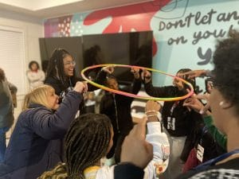

<?xml version="1.0" encoding="UTF-8"?><rss version="2.0"
	xmlns:content="http://purl.org/rss/1.0/modules/content/"
	xmlns:wfw="http://wellformedweb.org/CommentAPI/"
	xmlns:dc="http://purl.org/dc/elements/1.1/"
	xmlns:atom="http://www.w3.org/2005/Atom"
	xmlns:sy="http://purl.org/rss/1.0/modules/syndication/"
	xmlns:slash="http://purl.org/rss/1.0/modules/slash/"
	>

<channel>
	<title>Youth Programs Archives - Four Corners Group</title>
	<atom:link href="./tag/youth-programs/feed/" rel="self" type="application/rss+xml" />
	<link>./tag/youth-programs/</link>
	<description></description>
	<lastBuildDate>Thu, 29 May 2025 19:37:43 +0000</lastBuildDate>
	<language>en-US</language>
	<sy:updatePeriod>
	hourly	</sy:updatePeriod>
	<sy:updateFrequency>
	1	</sy:updateFrequency>
	<generator>https://wordpress.org/?v=6.9</generator>

<image>
	<url>../../../wp-content/uploads/2022/05/FOUR_CORNERS_GROUP_LOGO_235x235-150x150.jpg</url>
	<title>Youth Programs Archives - Four Corners Group</title>
	<link>./tag/youth-programs/</link>
	<width>32</width>
	<height>32</height>
</image> 
	<item>
		<title>Summer Youth Programs</title>
		<link>./summer-youth-programs/</link>
		
		<dc:creator><![CDATA[brian.holben]]></dc:creator>
		<pubDate>Thu, 29 May 2025 19:36:36 +0000</pubDate>
				<category><![CDATA[Youth Programs]]></category>
		<category><![CDATA[Youth]]></category>
		<guid isPermaLink="false">../../../../?p=9437</guid>

					<description><![CDATA[<p>Looking for something for your student to do this summer? Join us for our summer &#8220;Bridge&#8221; youth programs happening NOW at our 3 metro Atlanta locations (Austell, Marietta, Atlanta).Twice a month, we offer youth programs that focus on life skills, character development, public speaking, job readiness and more! And we provide dinner! To learn more, [&#8230;]</p>
<p>The post <a href="./summer-youth-programs/">Summer Youth Programs</a> appeared first on <a href="../../../../en">Four Corners Group</a>.</p>
]]></description>
										<content:encoded><![CDATA[

Looking for something for your student to do this summer? Join us for our summer &#8220;Bridge&#8221; youth programs happening NOW at our 3 metro Atlanta locations (Austell, Marietta, Atlanta).Twice a month, we offer youth programs that focus on life skills, character development, public speaking, job readiness and more! And we provide dinner! To learn more, head over to <a href="../../../../our-programs">../../../../our-programs</a> and register today!<p>The post <a href="./summer-youth-programs/">Summer Youth Programs</a> appeared first on <a href="../../../../en">Four Corners Group</a>.</p>
]]></content:encoded>
					
		
		
			</item>
	</channel>
</rss>
